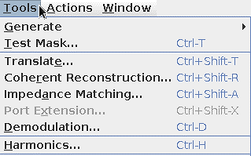
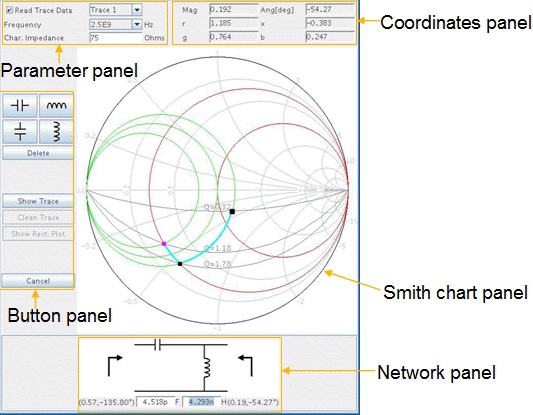
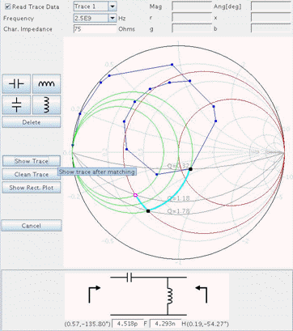

Impedance Matching
The aim of measuring return loss is usually to check if the power transfer from a source to a load is maximized, for example, the load is matched to the source. If the desired match is not reached, you may want to adjust his matching network. To assist you when designing an impedance matching network, a graphical tool is integrated into the Signal Analyzer. This tool can be accessed from the Tools menu as shown below.

Once activated, the Impedance Matching tool opens as shown below

The impedance matching dialog box is composed of the following panels:
Parameter panel
- Read Trace Data
If the graph in focus is a Smith chart and there is at least one data trace in the graph, the checkbox is editable and will be checked by default. When the checkbox is checked, the initial reflection coefficient represented by the point in magenta in Smith Chart panel corresponds to a data point on the selected trace in the original graph and cannot be freely dragged. The frequency can be selected from the frequency list. The combo-box next to Read Trace Data checkbox shows available traces that can be selected.
When the checkbox is unchecked, the frequency can be changed to arbitrary value. The initial point in Smith Chart panel is movable and its coordinates are editable. This allows you to design a matching network as if the initial reflection coefficient were a certain value.
- Frequency
Reflection coefficient is frequency dependent. In the case that Read Trace Data is checked, if marker is visible and either up-marker or down-marker is placed onto the selected trace, the initial frequency value corresponds to the data point pointed by the marker. If marker is invisible or no marker is placed onto the selected trace, the initial frequency corresponds to the middle point of the selected trace. You can change the frequency from the frequency list depending on your selected trace. Once the trace is switched, the frequency is reset to its initial value.
When Read Trace Data is unchecked, the frequency can be changed to any value. Upon changing the frequency the positions of the points in the Smith chart panel are updated accordingly.
- Char. Impedance
The characteristic impedance is read from the selected data trace if Read Trace Data is checked. You can change it freely but the changed value is not stored back to the original data trace. Upon changing the characteristic impedance value the positions of the points (except the initial point) in the Smith Chart panel are updated accordingly. If Read Trace Data is unchecked this field is initialized with 50 Ohm.
Coordinate panel
Coordinate panel displays the coordinates of the point in focus in the Smith Chart panel in terms of reflection coefficient, normalized impedance and normalized admittance. They are not editable except for the case that Read Trace Data in parameter panel is unchecked and the focus is on the initial (magenta) data point in the Smith Chart panel.
- Mag - magnitude of the reflection coefficient in linear scale
- Ang[deg] - angle of the reflection coefficient in degree
- r - normalized resistance
- x - normalized reactance
- g - normalized conductance
- b - normalized susceptance
Button panel
- Element buttons
Four fundamental types of elements are supported: serial capacitor, serial inductor, shunt capacitor and shunt inductor. By pressing the button once, one corresponding element is appended to the right end of the existing network. Meanwhile a point is added to the Smith Chart panel indicating current reflection coefficient resulting from current matching network.
- Delete
By pressing "Delete" button once, the right-most element in the matching network is deleted. Meanwhile the corresponding point in Smith Chart panel is deleted as well.
- Show Trace
By pressing "Show Trace" button the reflection coefficient data trace coming out of the matching network is displayed as shown below. After modifying the matching network or switching the trace selection, you need to push the button again to refresh the data trace. This button is enabled only if Read Trace Data in parameter panel is checked.

- Clean Trace
By pressing "Clean Trace" button the displayed data trace in the Smith Chart panel is deleted.
- Show Rect. Plot
By pressing "Show Rect. Plot" button a rectangular plot is opened which shows the magnitude in decibel of the reflection coefficient versus frequency. This button is enabled only if a data trace is present in the Smith chart panel.
- Cancel
By pressing this button the dialog is closed.
Smith Chart panel
The effect of the matching network is visualized in Smith Chart panel. When opening the Impedance Matching dialog there will be one magenta point in the chart which stands for the initial reflection coefficient. This initial point is not movable and depends on the selected trace and the frequency in the parameter panel if Read Trace Data is checked. If Read Trace Data is unchecked then the initial point is movable. For every element added to the matching network there is one corresponding point in the Smith Chart. The trajectory between all points is highlighted in blue. It indicates how the reflection coefficient is changed by the matching network. You can move the points (except the magenta one, if Read Trace Data in parameter panel is checked) along certain paths, as indicated by the red circles for serial elements or green circles for shunt elements. The value of this element is updated accordingly in the network panel. The coordinates will also be updated.
Network panel
Network panel shows the current matching network and the value of individual element. The value of each element is editable. The trajectory in the Smith Chart panel and the values in coordinate panel are updated upon changing the value of an element. This allows to observe the effect of a realistic conductor or capacitor.
Functional changes
- Introduced in SmarTest 7.0.3